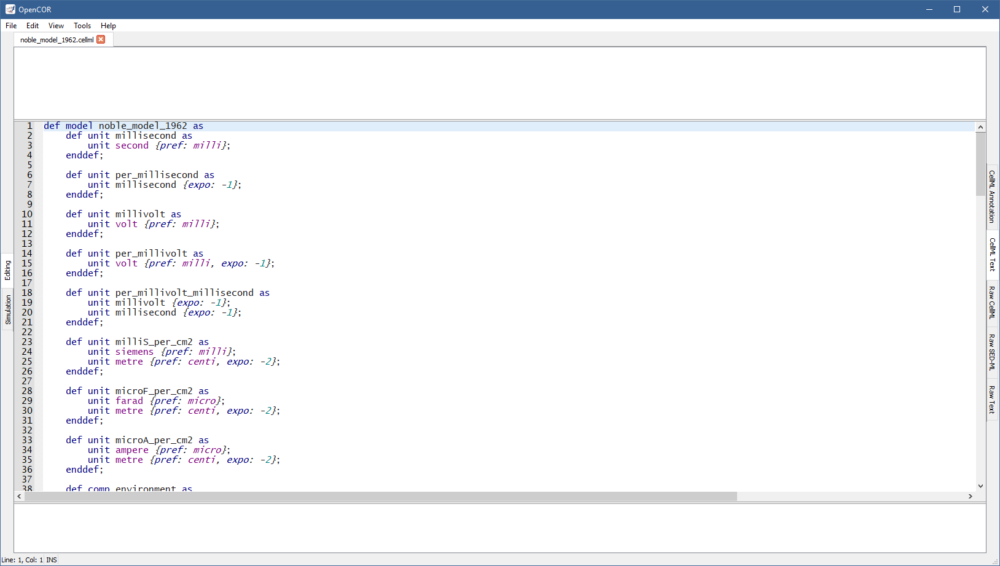

The CellMLTextView plugin can be used to edit CellML files using a text editor that supports the CellML Text format. If you open a CellML file, it will look something like:
Apart from using a specific format, the view has the same features as the Raw CellML view with one exception: CellML Validation only validates against the CellML Text format, not CellML per se.
People familiar with COR will find that the CellML Text format is compatible with the COR format, although it supports additional features:
The import element (i.e. support for CellML 1.1);
The cmeta:id attribute on all CellML elements (i.e. support for CellML annotation);
The degree qualifier for the diff element (i.e. support for higher-order derivatives);
The notanumber and infinity constants; and
An unlimited number of group types (in COR, a group can only specify one encapsulation and/or one containment type).
However, note that the COR format has some limitations that are also present in the CellML Text format:
The reaction element is not supported (its use is not only discouraged, but it has also been removed from CellML 2.0, which is not yet supported by OpenCOR);
A component element may contain a set of math elements, but when serialised back, only one math element will remain, with all the equations in that one and unique math element.
The CellML Text format offers, for the large part, a one-to-one mapping to the CellML format with the view of making it easier to create and edit CellML files.
To define a model of name my_model, we use:
def model my_model as
...
enddef;
The model definition sits between as and enddef;, and can consist of imports, unit definitions, component definitions, group definitions, and mapping definitions.
To define an import for units and components defined in a CellML file, which URI is my_imported_model_uri, we would use:
def import using "my_imported_model_uri" for
...
enddef;
To import a unit originally named my_reference_unit and renamed my_imported_unit in our model, we would use:
unit my_imported_unit using unit my_reference_unit;
Similarly, to import a component originally named my_reference_component and renamed my_imported_component in our model, we would use:
comp my_imported_component using comp my_reference_component;
Putting everything together, we would have:
def import using "my_imported_model_uri" for
unit my_imported_unit using unit my_reference_unit;
comp my_imported_component using comp my_reference_component;
enddef;
To define a base unit of name my_base_unit, we would use:
def unit my_base_unit as base unit;
To define a unit of name my_unit, based on some other units, we would use:
def unit my_unit as
unit my_other_unit {...};
unit second {...};
unit litre {...};
unit volt {...};
...
enddef;
my_other_unit refers to a user-defined unit while second is an SI base unit, litre a convenience unit and volt an SI-derived unit .
The following SI base (in bold) and -derived units, as well as convenience units (in italics), can be used:
ampere |
becquerel |
candela |
celsius |
coulomb |
dimensionless |
farad |
gram |
gray |
henry |
hertz |
joule |
katal |
kelvin |
kilogram |
liter |
litre |
lumen |
lux |
meter |
metre |
mole |
newton |
ohm |
pascal |
radian |
second |
siemens |
sievert |
steradian |
tesla |
volt |
watt |
weber |
Additional information can be provided within curly brackets.
Thus, prefix, exponent, multiplier, and offset values of \(p\), \(e\), \(m\), and \(o\) can be used on a unit \(u\) to define a new unit equal to \(m \cdot (p \cdot u)^e+o\).
For example, to define my_unit as being equal to \(3 \cdot (milli \cdot my\_other\_unit)^{-1}+7\), we would use:
def unit my_unit as
unit my_other_unit {pref: milli, expo: -1, mult: 3, off: 7};
enddef;
By default, pref, expo, mult, and off have a value of \(0\), \(1.0\), \(1.0\), and \(0.0\), respectively.
pref can either be an integer or have any of the following values:
yotta |
\(10^{24}\) |
deci |
\(10^{-1}\) |
zetta |
\(10^{21}\) |
centi |
\(10^{-2}\) |
exa |
\(10^{18}\) |
milli |
\(10^{-3}\) |
peta |
\(10^{15}\) |
micro |
\(10^{-6}\) |
tera |
\(10^{12}\) |
nano |
\(10^{-9}\) |
giga |
\(10^{9}\) |
pico |
\(10^{-12}\) |
mega |
\(10^{6}\) |
femto |
\(10^{-15}\) |
kilo |
\(10^{3}\) |
atto |
\(10^{-18}\) |
hecto |
\(10^{2}\) |
zepto |
\(10^{-21}\) |
deka |
\(10^{1}\) |
yocto |
\(10^{-24}\) |
To define a component of name my_component, we would use:
def comp my_component as
...
enddef;
The component definition sits between as and enddef;, and can consist of unit definitions, variable definitions, and mathematical equations.
To define a variable of name my_variable and of unit my_unit, we would use:
var my_variable: my_unit {...};
Additional information can be provided within curly brackets: an initial value, a public interface, and/or a private interface.
For example, to initialise my_variable to \(3\) and set its public and private interfaces to in and out, respectively, we would use:
var my_variable: my_unit {init: 3, pub: in, priv: out};
By default, init has no value (i.e. the variable is not initialised) while pub and priv have a value of none (i.e. the variable belongs to the current component and is not visible to other components in the model).
init can either take a real number as a value or the name of a variable defined in the current component.
Both pub and priv can take any of the following values: none, in, or out.
A mathematical equation must either have an identifier or an ODE on its left hand side, i.e. \(x=...\) or \(\frac{dx}{dt}=...\), respectively. To write such equations, we would use:
x = ...;
and
ode(x, t) = ...;
The ODE is a first-order ODE and could also be written:
ode(x, t, 1{dimensionless})
As can be seen, the order of the ODE is specified using a constant value of unit dimensionless, which means that to have \(\frac{d^2 x}{dt^2}\), \(\frac{d^3 x}{dt^3}\), etc., we would use:
ode(x, t, 2{dimensionless})
ode(x, t, 3{dimensionless})
...
The right-hand side of an equation can use any of the following mathematical operators, elements and constants:
Relational operators:
|
Equality (assignment) |
x = y
|
|
Equality (binary) |
x == y
|
|
Inequality |
x <> y
|
|
Greater than |
x > y
|
|
Lower than |
x < y
|
|
Greater than or equal to |
x >= y
|
|
Lower than or equal to |
x <= y
|
Arithmetic operators:
|
Addition |
x+y
|
|
Subtraction |
x-y
|
|
Multiplication |
x*y
|
|
Division |
x/y
|
|
Exponentiation (generic) |
pow(x, 3{dimensionless})
pow(x, y)
|
|
Exponentiation (square) |
sqr(x)
|
|
Root (generic) |
root(x, 3{dimensionless})
root(x, y)
|
|
Root (square) |
sqrt(x)
|
|
Absolute value |
abs(x)
|
|
Exponential |
exp(x)
|
|
Natural logarithm |
ln(x)
|
|
Logarithm |
log(x)
log(x, 3{dimensionless})
log(x, y)
|
|
Floor |
floor(x)
|
|
Ceiling |
ceil(x)
|
|
Factorial |
fact(x)
|
|
Remainder |
rem(x, 3{dimensionless})
rem(x, y)
|
|
Minimum |
min(x, 3{dimensionless})
min(x, y)
min(x, y, z)
|
|
Maximum |
max(x, 3{dimensionless})
max(x, y)
max(x, y, z)
|
|
Greatest common divisor |
gcd(x, 3{dimensionless})
gcd(x, y)
gcd(x, y, z)
|
|
Least common multiple |
lcm(x, 3{dimensionless})
lcm(x, y)
lcm(x, y, z)
|
Logical operators:
|
And |
x and y
|
|
Or |
x or y
|
|
Exclusive or |
x xor y
|
|
Not |
not x
not(x and y)
|
Calculus elements:
|
Differentiation |
ode(x, t)
ode(x, t, 2{dimensionless})
|
Trigonometric operators:
sinsinhasinasinh |
Sine
Hyperbolic sine
Inverse sine
Inverse hyperbolic sine
|
sin(x)
sinh(x)
asin(x)
asinh(x)
|
coscoshacosacosh |
Cosine
Hyperbolic cosine
Inverse cosine
Inverse hyperbolic cosine
|
cos(x)
cosh(x)
acos(x)
acosh(x)
|
tantanhatanatanh |
Tangent
Hyperbolic tangent
Inverse tangent
Inverse hyperbolic tangent
|
tan(x)
tanh(x)
atan(x)
atanh(x)
|
secsechasecasech |
Secant
Hyperbolic secant
Inverse secant
Inverse hyperbolic secant
|
sec(x)
sech(x)
asec(x)
asech(x)
|
csccschacscacsch |
Cosecant
Hyperbolic cosecant
Inverse cosecant
Inverse hyperbolic cosecant
|
csc(x)
csch(x)
acsc(x)
acsch(x)
|
cotcothacotacoth |
Cotangent
Hyperbolic cotangent
Inverse cotangent
Inverse hyperbolic cotangent
|
cot(x)
coth(x)
acot(x)
acoth(x)
|
Constants:
|
True |
true
|
|
False |
false
|
|
Not a number |
nan
|
|
Pi |
pi
|
|
Infinity |
inf
|
|
Euler’s number |
e
|
A piecewise statement can also be used. For example, to define \(x\) as being equal to \(y+z\) when \(x > 0\) and \(y-z\) otherwise, we would use:
x = sel
case x > 0{dimensionless}:
y+z;
otherwise:
y-z;
endsel;
or
x = sel(case x > 0{dimensionless}: y+z, otherwise: y-z);
The two syntaxes are equivalent, except that the former syntax can only be used in the top-level (of the right-hand side) of an equation while the latter syntax can be used anywhere (on the right hand-side of an equation).
To define a group, we would use:
def group as ... for
...
enddef;
A group must be typed as a containment and/or an encapsulation. For example, to define a containment group, we would use:
def group as containment for
...
enddef;
A containment group can be named.
For example, to define a containment group of name my_containment, we would use:
def group as containment my_containment for
...
enddef;
An encapsulation group is always nameless, so to define an encapsulation group, we would use:
def group as encapsulation for
...
enddef;
A group can have more than one type.
For example, to define a group as both an encapsulation group and a containment group (of name my_containment), we would use:
def group as encapsulation and containment my_containment for
...
enddef;
A group definition is used whenever there is a need for a hierarchy of components.
Some components may include others.
For example, to define a group where both my_component1 and my_component2 are at the top level, and where my_component1 includes my_component11, my_component12 and my_component13, we would use:
def group as ... for
comp my_component1 incl
comp my_component11;
comp my_component12;
comp my_component13;
endcomp;
comp my_component2;
enddef;
Similarly, to define a group where my_component1 is at the top level, where my_component1 includes both my_component11 and my_component12, and where my_component11 includes my_component111, we would use:
def group as ... for
comp my_component1 incl
comp my_component11 incl
comp my_component111;
endcomp;
comp my_component12;
endcomp;
enddef;
To define some mappings between two components of name my_component1 and my_component2, we would use:
def map between my_component1 and my_component2 for
...
enddef;
To map variables my_variable1a with my_variable2a, my_variable1b with my_variable2b, and my_variable1c with my_variable2c for components my_component1 and my_component2, respectively, we would use:
def map between my_component1 and my_component2 for
vars my_variable1a and my_variable2a;
vars my_variable1b and my_variable2b;
vars my_variable1c and my_variable2c;
enddef;
The CellML Text format does not support the editing of CellML annotations.
However, cmeta:id’s are used to make the link between CellML elements and CellML annotations.
So, we need the CellML Text format to support the use of cmeta:id’s and this is done by enclosing a cmeta:id value (e.g., my_cmeta_id) within curly brackets:
{my_cmeta_id}
which can then be used to annotate various CellML elements:
def model{my_model_cmeta_id} my_model as
def import{my_import_cmeta_id} using "my_imported_model_uri" for
unit{my_imported_unit_cmeta_id} my_imported_unit using unit my_reference_unit;
comp{my_imported_component_cmeta_id} my_imported_component using comp my_reference_component;
enddef;
def unit{my_base_unit_cmeta_id} my_base_unit as base unit;
def unit{my_unit_cmeta_id} my_unit as
unit{my_other_unit_cmeta_id} my_other_unit {pref: milli, expo: -1, mult: 3, off: 7};
enddef;
def comp{my_component_cmeta_id} my_component as
var{my_variable_cmeta_id} my_variable: my_unit {init: 3, pub: in, priv: out};
a ={my_algebraic_equation_cmeta_id} b+c;
ode(d, t) ={my_ode_equation_cmeta_id} e+f;
enddef;
def group{my_group_cmeta_id} as encapsulation{my_encapsulation_cmeta_id} and containment{my_containment_cmeta_id} my_containment for
comp{my_component1_cmeta_id} my_component1 incl
comp{my_component11_cmeta_id} my_component11;
comp{my_component12_cmeta_id} my_component12;
comp{my_component13_cmeta_id} my_component13;
endcomp;
comp{my_component2_cmeta_id} my_component2;
enddef;
def map{my_map_cmeta_id} between{my_between_cmeta_id} my_component1 and my_component2 for
vars{my_varsa_cmeta_id} my_variable1a and my_variable2a;
vars{my_varsb_cmeta_id} my_variable1b and my_variable2b;
vars{my_varsc_cmeta_id} my_variable1c and my_variable2c;
enddef;
enddef;
The CellMLTextView plugin relies on the CellML Text format. CLI support has therefore been added to it so that a CellML file can, from the command line, be imported to the CellML Text format, and back.
For example, to import models/van_der_pol_model_1928.cellml to the CellML Text format, we would do the following:
$ ./OpenCOR -c CellMLTextView::import models/van_der_pol_model_1928.cellml
def model van_der_pol_model_1928 as
def comp main as
def unit per_second as
unit second {expo: -1};
enddef;
var time: second;
var x: dimensionless {init: -2};
var y: dimensionless {init: 0};
var epsilon: dimensionless {init: 1};
ode(x, time) = y*1{per_second};
ode(y, time) = (epsilon*(1{dimensionless}-sqr(x))*y-x)*1{per_second};
enddef;
enddef;
Similarly, and assuming the above import has been saved to a file named van_der_pol_model_1928.txt, we could get our original CellML file by doing the following:
$ ./OpenCOR -c CellMLTextView::export van_der_pol_model_1928.txt > van_der_pol_model_1928.cellml
For precaution, the new CellML file relies on CellML 1.1, as confirmed by diff:
$ diff models/van_der_pol_model_1928.cellml van_der_pol_model_1928.cellml
2c2
< <model name="van_der_pol_model_1928" xmlns="http://www.cellml.org/cellml/1.0#" xmlns:cellml="http://www.cellml.org/cellml/1.0#">
---
> <model name="van_der_pol_model_1928" xmlns="http://www.cellml.org/cellml/1.1#" xmlns:cellml="http://www.cellml.org/cellml/1.1#">
Comments¶
You can (un)comment a piece of code by pressing
Ctrl+/. If no text is selected or if it consists of one or several full lines then the comment will be rendered as// XXX. For instance:Alternatively, if one or several lines are partially selected then the comment will be rendered as
/* XXX */. For instance:Note that
/* XXX */comments are only for convenience and are not serialised back to CellML. Indeed, such comments can be inserted anywhere, including within an equation. For instance:It is therefore impossible to determine where such comments should be included when serialised back.
// XXXcomments can also be inserted anywhere, but unlike/* XXX */comments they are serialised back. However, the rendering of certain elements is such that when serialised back,// XXXcomments may be included in the parent element of those elements, and either before or after those elements, depending on the situation.